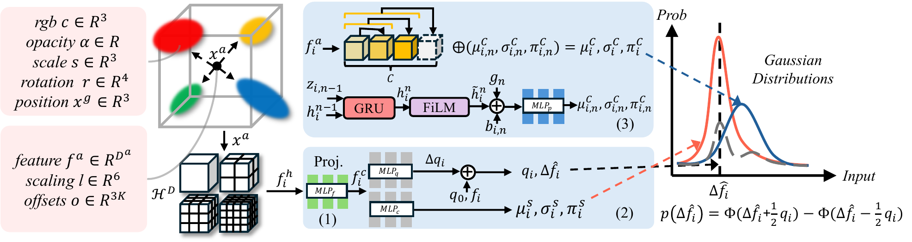
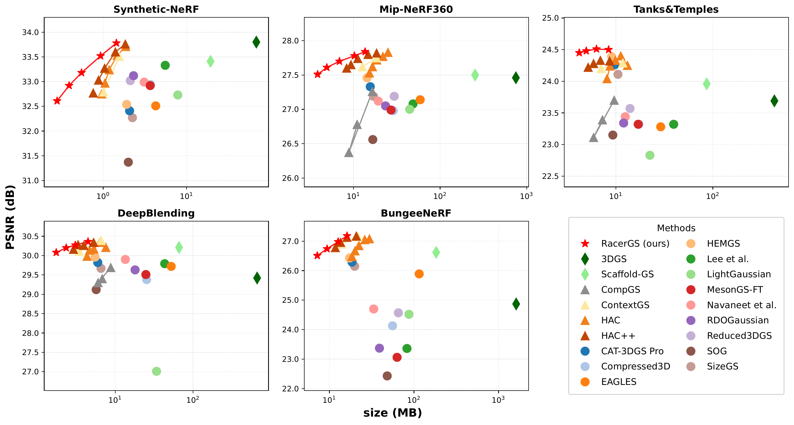
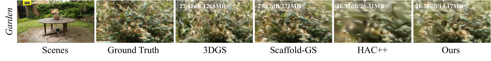
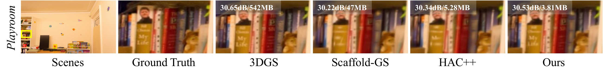
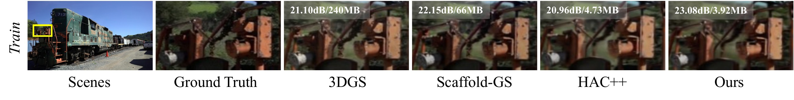
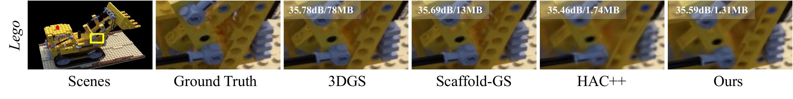
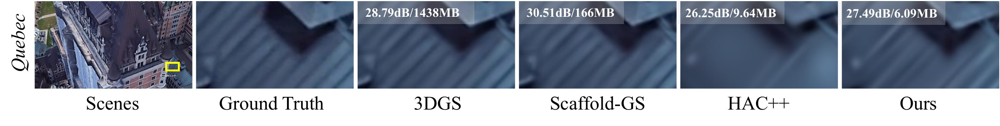

RacerGS: Residual-Autoregressive Context for 3D Gaussian Splatting Compression
Abstract
3D Gaussian Splatting (3DGS) has emerged as a promising approach for fast, high-quality novel-view rendering. However, its large parameter size remains a bottleneck for storage and transmission. We propose RacerGS, a compact 3DGS compression framework that achieves scene reconstruction at significantly reduced storage sizes with preserved fidelity. To obtain compact and spatially coherent features, we design a hash projection model that projects the anchor hash encodings into compact context features. Additionally, we introduce a FiLM-modulated autoregressive GRU context model that utilizes causal dependencies among anchor feature groups and uses recurrent hidden states to refine entropy-model parameters, improving bitrate efficiency. Furthermore, we adaptively entropy-code quantized anchor-attribute residuals relative to their context-predicted means, leveraging spatial consistency to reduce symbol entropy.
Overall, RacerGS achieves more than 150× compression over vanilla 3DGS and 28× over Scaffold-GS, while providing comparable rendering quality. Extensive experiments across five datasets demonstrate that RacerGS outperforms prior 3DGS compression methods in both storage reduction and rate-distortion performance.
Method

RacerGS builds on an anchor-based 3DGS codec and compresses each anchor's feature fa, scaling l, and offsets o with three components. The refined entropy parameters are combined with the spatial prior to form a Gaussian mixture model for residual entropy coding.
(1) Hash projection model
Instead of feeding raw multi-resolution hash encodings fh to the entropy networks, an MLP projects them into compact, fused context features fc, so the entropy context stays low-dimensional while the hash grid keeps its capacity.
(2) Adaptive residual quantization
Anchor attributes are quantized and entropy-coded as residuals around their context-predicted means with learned step sizes, r = ⌊(f − μs) ⊘ q⌉, which contracts the dynamic range and lowers symbol entropy.
(3) FiLM-modulated autoregressive GRU
Each anchor feature is split into chunks. A GRU advances one step per decoded chunk, its hidden state is FiLM-modulated, and a weight-shared, chunk-positional predictor refines the entropy parameters of the next chunk.
Rate-Distortion Results

RD curves on Synthetic-NeRF, Mip-NeRF360, Tanks&Temples, DeepBlending, and BungeeNeRF. RacerGS reaches a better rate-distortion trade-off than codebook, pruning, entropy, and anchor-based baselines across datasets.
High-rate comparison with HAC++
| Dataset | HAC++ | RacerGS | ||
|---|---|---|---|---|
| PSNR (dB) | Size (MB) | PSNR (dB) | Size (MB) | |
| Synthetic-NeRF | 33.76 | 1.84 | 33.78 | 1.44 |
| Mip-NeRF360 | 27.82 | 18.48 | 27.84 | 13.61 |
| Tanks&Temples | 24.32 | 8.63 | 24.50 | 8.42 |
| DeepBlending | 30.34 | 5.28 | 30.36 | 4.48 |
| BungeeNeRF | 27.17 | 20.82 | 27.18 | 16.15 |
Higher PSNR at a smaller size on every dataset. See the paper for all baselines, SSIM/LPIPS, and the low-rate setting.
Qualitative Comparisons
Zoomed-in crops with PSNR / size per method. RacerGS preserves edges and material details at a fraction of the storage.

garden (Mip-NeRF360): fewer leaf artifacts

playroom (DeepBlending): clearer book titles

train (Tanks&Temples): sharper metal structures

lego (Synthetic-NeRF)

quebec (BungeeNeRF)
BibTeX
@inproceedings{wang2026racergs,
title={RacerGS: Residual-Autoregressive Context for 3D Gaussian Splatting Compression},
author={Wang, Wenqing and Zeng, Huimin and Fu, Yun},
booktitle={Advances in Neural Information Processing Systems},
year={2026}
}